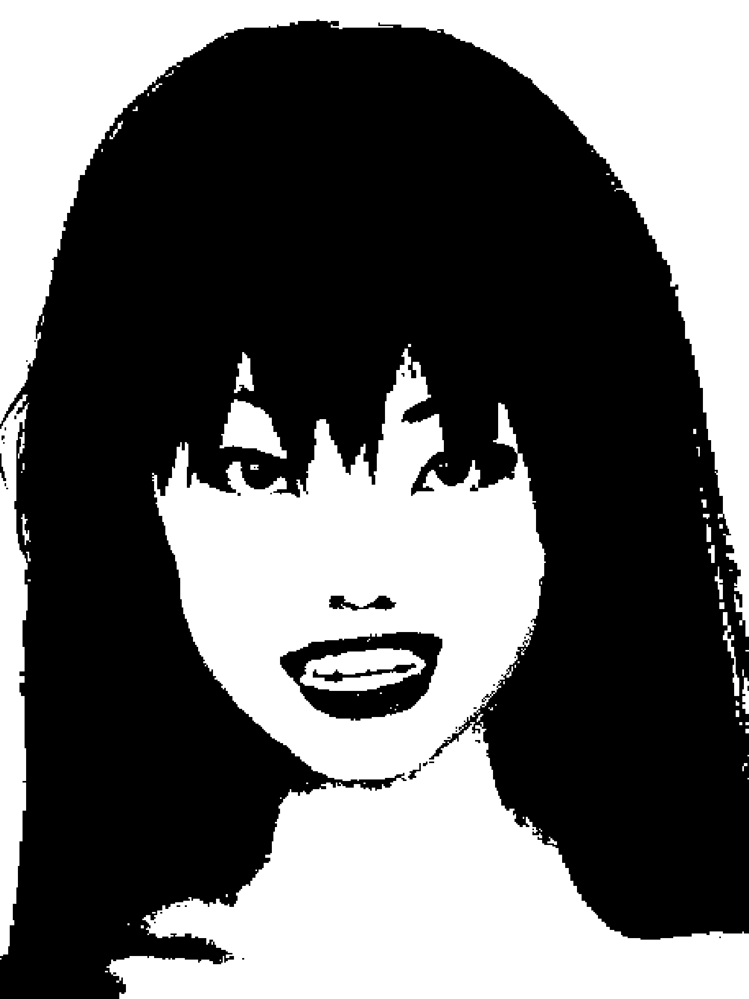

The Terrariums

it/its
| Name | Toys |
| Celebration Day | Unitilis 10 |
| Size | Not too short |
| Breed | Deity |
| Sex | Are you going to be good about it? |
| Comes from | susnet |
Background: A basic Tabs form. It values creating connections.


 Open relationship")
 Casual relationship")
| Favorite activity: | T polyamory |
| Favorite food: | Canned mandarin oranges |
| Favorite drink: | Hot corn water |
| Favorite toy: | Oil hourglass |
| Personal item: | Silver heart necklace |
Fun Facts:
- It used to be more evil. Yves probably has something to do with the change.
- -
- -
Distinct features: Bright neon lime eyes and extremely sharp fangs. The pointed, glossy black painted nails it has borders being claw-like.
Personality: Highly maternal and somewhat misandric.
Fashion sense: Dark colors and short, cropped garments with flared sleeves.
Other notes: Don't tell anyone, but its favorite lover is Yves.
Bonded to: Yves Macaroni (Lover), Lily Macaroni (Daughter), Bella Crocetti (Daughter-in-law), Sage Macaroni (Son)
Averse to:
Plays well with:
Separate from: